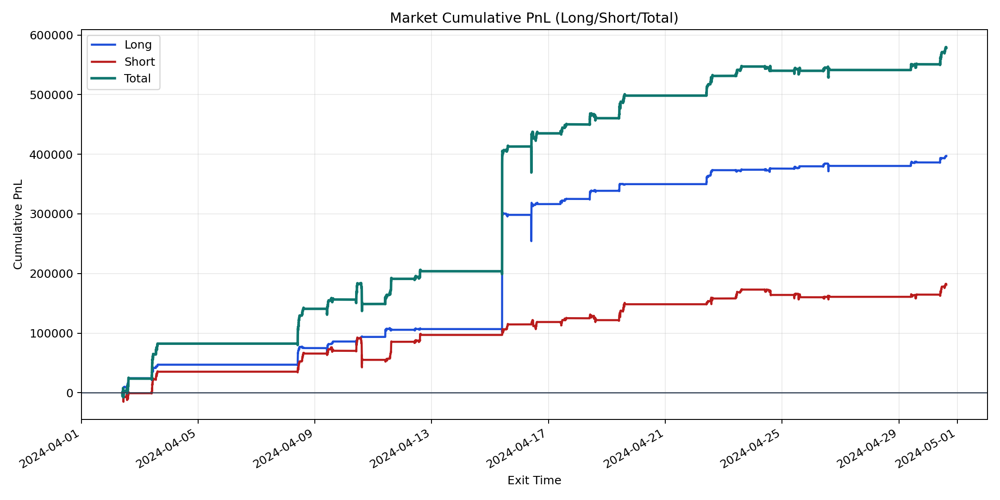
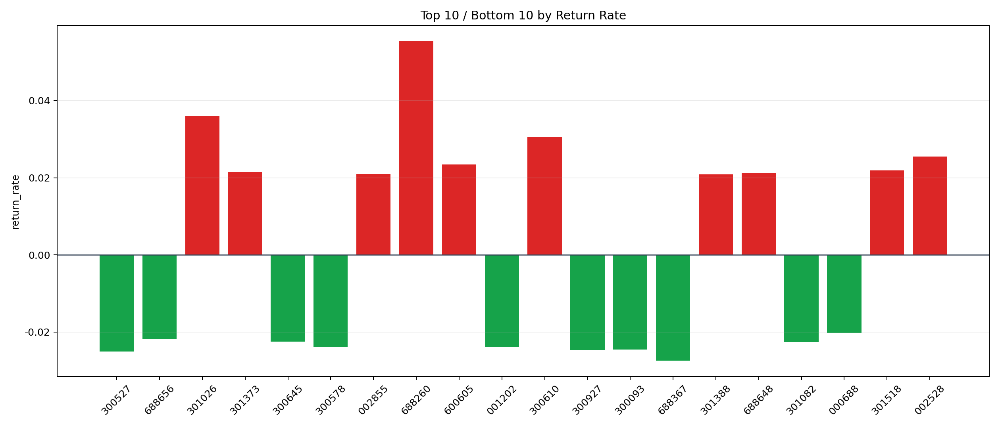

| repo_root | /home/haoranyou/data/output/alpha0.4_1w_5s_3ticks |
|---|---|
| period_months | 1 |
| period_label | 2024-04-02_to_2024-04-30 |
| start_time | 2024-04-02 09:50:12 |
| end_time | 2024-04-30 15:00:00 |
| n_trades | 45227 |
| n_symbols | 1767 |
| total_pnl | 578490.5749499999 |
| long_total_pnl | 397151.16820000013 |
| short_total_pnl | 181339.4067499998 |
| total_entry_notional | 419132787.0 |
| long_entry_notional | 173920023.0 |
| short_entry_notional | 245212764.0 |
| total_return_rate | 0.0013802083561408427 |
| long_return_rate | 0.0022835275740505172 |
| short_return_rate | 0.0007395186277905166 |
| top_symbols_by_return | ["688260", "301026", "300610", "002528", "600605", "301518", "301373", "688648", "002855", "301388"] |
| bottom_symbols_by_return | ["688367", "300527", "300927", "300093", "001202", "300578", "301082", "300645", "688656", "000688"] |

